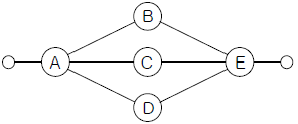
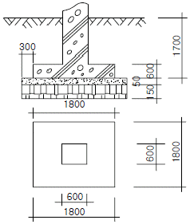
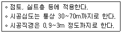
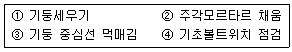

건설안전산업기사 (2008-03-02 기출문제)
1과목: 산업안전관리론
1. 연평균 1000명의 근로자가 작업하는 사업장에서 1일 8시간동안 연간 300일을 근무하는 동안 24건의 재해가 발생하였다. 만약, 이 사업장에서 한 작업자가 평생동안 근무한다면 약 몇 건의 재해를 당하겠는가? (단, 1인당 평생근로시간은 100,000시간으로 한다.)
- 1건
- 3건
- 7건
- 10건
(정답률: 47%)

2. 다음의 재해 원인 중 간접원인으로 볼 수 없는 것은?
- 안전교육 미시행
- 생산방법의 부적당
- 구조 재료의 부적합
- 보호구의 미사용
(정답률: 64%)
3. 다음 중 위험예지훈련 기초 4라운드(4R)에 대한 내용으로 틀린 것은?
- 1라운드 : 본질추구
- 2라운드 : 위험요인결정
- 3라운드 : 대책수립
- 4라운드 : 목표설정
(정답률: 63%)
4. 다음 중 재해예방의 4원칙에 해당하지 않는 것은?
- 예방가능의 원칙
- 대책선정의 원칙
- 손실우연의 원칙
- 통계확률의 원칙
(정답률: 68%)
5. 산업안전 보건법에 규정된 안전ㆍ보건표지에 관한 설명으로 옳은 것은?
- 안내표지는 청색의 원형 바탕에 백색으로 표시되어 있으며 9종류가 있다.
- “인화성물질의 경고” 표시는 검정색 삼각형 모양의 노랑의 바탕색을 사용한다.
- 안전ㆍ보건표지에 사용되는 흰색은 파란색 또는 녹색에 대한 보조색이다.
- 안전ㆍ보건표지에 사용되는 기본모형의 색채 중 빨강은 경고표지에 사용할 수 없다.
(정답률: 54%)
6. 다음 중 유기화합물용 방독마스크의 정화통 색은?
- 녹색
- 갈색
- 적색
- 백색
(정답률: 80%)
7. 다음 중 감각차단현상이 발생하기 가장 쉬운 경우는?
- 복잡한 업무가 장시간 지속될 때
- 정신적인 업무가 장시간 지속될 때
- 단조로운 업무가 장시간 지속될 때
- 주의력의 배분을 요하는 작업을 장시간 지속할 때
(정답률: 64%)
8. 다음의 적응기제 중 자기의 난처한 입장이나 실패의 결점을 이유나 변명으로 일관하는 것, 또는 실제의 행위나 상태보다 훌륭하게 평가되기 위하여 구실을 내세우는 행위를 무엇이라 하는가?
- 투사
- 도피
- 합리화
- 동일화
(정답률: 74%)
9. 다음 중 100~1000명 미만의 중규모 사업장에 가장 적합한 안전조직은?
- 참모식 조직
- 라인식 조직
- 위원회 조직
- 라인 및 참모 혼합식 조직
(정답률: 67%)
10. 사고예방대책 제5단계의 “시정책의 적용”에서 3E와 관계가 없는 것은?
- 교육(Education)
- 기술(Engineering)
- 재정(Economics)
- 관리(Enforcement)
(정답률: 59%)
11. 수퍼(Super)의 역할이론 중 역할연기에 대한 설명으로 옳은 것은?
- 인간을 사물에 적응시키는 능력이다.
- 자아탐색인 동시에 자아실현의 수단이다.
- 개인의 역할을 기대하고 감수하는 수단이다.
- 다른 역할을 해내기 위해 다른 일을 구할 때도 있다.
(정답률: 52%)
12. 안전행동을 실행해 낼 수 있는 동기를 부여하는데 가장 적절한 교육은?
- 안전지식교육
- 안전기능교육
- 안전태도교육
- 안전환경교육
(정답률: 76%)
13. 안전관리자가 안전교육의 효과를 높이기 위해서 안전 퀴즈대회를 열어 우승자에게 상을 주었다면 이는 어떤 학습 원리를 학습자에게 적용한 것인가?
- Thorndike의 연습의 법칙
- Thorndike의 준비성의 법칙
- Pavlov의 강도의 원리
- Skinner의 강화의 원리
(정답률: 49%)
14. 연간 근로시간이 240000시간인 A 공장에서 지난해 5건의 재해가 발생하여 총 330일의 휴업일수가 발생하였다면 이 공장의 강도율은 약 얼마인가?
- 1.03
- 1.13
- 1.23
- 1.33
(정답률: 48%)
15. 다음 중 학습의 전개 단계에서 주제를 논리적으로 체계화하는 방법과 거리가 가장 먼 것은?
- 간단한 것에서 복잡한 것으로
- 부분적인 것에서 전체적인 것으로
- 미리 알려져 있는 것에서 미지의 것으로
- 많이 사용하는 것에서 적게 사용하는 것으로
(정답률: 59%)
16. 다음 중 안전모의 성능시험 항목이 아닌 것은?
- 내관통성
- 충격흡수성
- 내구성
- 난연성
(정답률: 42%)
17. 다음 중 히인리히 재해 발생 5단계 중 제3단계에 해당하는 것은?
- 불안전한 행동 또는 불안전한 상태
- 사회적 환경 및 유전적 요소
- 관리의 부재
- 사고
(정답률: 67%)
18. 다음의 피로의 요인 중 외부인자에 속하지 않는 것은?
- 작업 조건
- 환경 조건
- 생활 조건
- 경험 조건
(정답률: 70%)
19. 다음 중 헤드십에 관한 내용으로 볼 수 없는 것은?
- 권한의 부여는 조직으로부터 위임받는다.
- 권한에 대한 근거는 법적 또는 규정에 의한다.
- 부하와의 사회적 간격이 좁다.
- 지휘의 형태는 권위주의적이다.
(정답률: 59%)
20. 안전교육방법 중 사례연구법의 장점으로 볼 수 없는 것은?
- 흥미가 있고, 학습동기를 유발할 수 있다.
- 현실적인 문제의 학습이 가능하다.
- 관찰력과 분석력을 높일 수 있다.
- 원칙과 규정의 체계적 습득이 용이하다.
(정답률: 48%)
2과목: 인간공학 및 시스템안전공학
21. 다음 중 작업방법의 개선원칙(ECRS)에 해당되지 않는 것은?
- 결합(Combine)
- 단순화(Simplify)
- 재배치(Rearrange)
- 교육(Education)
(정답률: 34%)
22. 다음 통제용 조종장치의 형태 중 그 성격이 다른 것은?
- 푸시 버튼(push button)
- 토글 스위치(toggle switch)
- 노브(knob)
- 로터리선택 스위치(rotary select switch)
(정답률: 59%)
23. 다음 중 인간이 기계보다 능가하는 기능이라고 할 수 없는 것은?
- 완전히 새로운 해결책을 찾아내는 기능
- 반복적인 작업을 신뢰성 있게 수행하는 기능
- 관찰을 통해서 일반화하여 귀납적으로 추리하는 기능
- 불시에 발생한 부적절한 일에 대하여 능숙하게 진행 시키는 기능
(정답률: 67%)
24. 다음 중 인간의 과오를 평가하기 위한 정량적 해석방법은?
- THERP
- FTA
- CA
- PHA
(정답률: 72%)
25. 다음 중 시스템 안전해석에 대한 설명으로 옳은 것은?
- 해석의 수리적 방법에 따라 귀납적, 연역적 방법이 있다.
- 해석의 논리적 견지에 따라 정성적, 연역적 방법이 있다.
- FTA는 연역적, 정량적 분석이 가능한 방법이다.
- FMEA를 인간과오율 추정법이라 한다.
(정답률: 66%)
26. 다음 시스템의 신뢰도는 약 얼마인가? (단, A와 B의 신뢰도는 0.9이고 C, D, E 의 신뢰도는 모두 0.8이다.)

- 0.48
- 0.60
- 0.72
- 0.84
(정답률: 65%)
27. 평균고장시간(MTTF)이 4×108 시간인 요소 2개가 병렬 체계를 이루었을 때 이 체계의 수명은 얼마인가?
- 2×108시간
- 4×108시간
- 6×108시간
- 8×108시간
(정답률: 58%)
28. 어떤 기기의 고장율이 시간당 0.002로 일정하다고 한다. 이 기기를 100시간 사용했을 때 고장이 발생할 확률은?
- 0.1813
- 0.2214
- 0.6253
- 0.8187
(정답률: 18%)
29. FTA(Fault Tree Analysis)에 사용되는 논리 중에서 입력사상 중 어느 하나만이라도 발생하게 되면 출력사상이 발생하는 것은?
- AND GATE
- OR GATE
- 기본사상
- 통상사상
(정답률: 54%)
30. 다음 중 통제표시비의 설계시 고려하여야 할 사항으로 볼 수 없는 것은?
- 계기의 크기
- 작업자의 시력
- 조작시간
- 방향성
(정답률: 67%)
31. 한 사무실에서 타자기의 소리 때문에 말소리가 묻히는 현상을 무엇이라 하는가?
- CAS
- dBA
- masking
- phon
(정답률: 64%)
32. 다음 중 체계가 감지, 정보보관, 정보처리 및 의사결정, 행동을 포함한 모든 임무를 수행하는 체계를 무엇이라 하는가?
- 수동 체계
- 기계화 체계
- 자동 체계
- 반자동 체계
(정답률: 49%)
33. 다음 중 진동이 인간 성능에 미치는 일반적인 영향과 거리가 먼 것은?
- 진동은 진폭에 비례하여 시력을 손상하며 10~25Hz의 경우 가장 심하다.
- 진동은 진폭에 비례하여 추적 능력을 손상하며 5Hz 이하의 낮은 진동수에서 가장 심하다.
- 안정되고 정확한 근육 조절을 요하는 작업은 진동에 의해서 저하된다.
- 반응시간, 감시, 형태 식별 등 주로 중앙 신경 처리에 달린 임무는 진동의 영향에 민감하다.
(정답률: 40%)
34. 5000개의 베어링을 품질 검사하여 400개의 불량품을 처리하였으나 실제로는 1000개의 불량 베어링이 있었다면 이러한 상황의 HEP(Human error probability)는?
- 0.04
- 0.08
- 0.12
- 0.16
(정답률: 49%)
35. 위팔을 자연스럽게 수직으로 늘어뜨린 채, 아래팔만으로 편하게 뻗어 파악할 수 있는 구역을 무엇이라 하는가?
- 파악 한계역
- 최소 작업역
- 정상 작업역
- 최대 작업역
(정답률: 62%)
36. 인간공학의 중요한 연구과제인 계면(interface)설계에 있어서 다음 중 계면에 해당되지 않는 것은?
- 작업공간
- 표시장치
- 조종장치
- 조명시설
(정답률: 42%)
37. 암호체계 사용상의 일반적 지침 중 부호의 양립성(compatibility)에 대한 설명은?
- 자극은 주어진 상황하의 감지장치나 사람이 감지할 수 있는 것이어야 한다.
- 암호의 표시는 다른 암호 표시와 구별될 수 있어야 한다.
- 자극과 반응간의 관계가 인간의 기대와 모순되지 않아야 한다.
- 두 가지 이상을 조합하여 사용하면 정보의 전달이 촉진된다.
(정답률: 53%)
38. 다음 중 작위적 오류(commission error)에 해당되지 않는 것은?
- 전선(cable)이 바뀌었다.
- 틀린 부품을 사용하였다.
- 부품이 거꾸로 조립되었다.
- 부품을 빠뜨리고 조립하였다.
(정답률: 53%)
39. 다음 중 수공구의 일반적인 설계 원칙과 거리가 먼 것은?
- 손목은 곧게 유지되도록 설계한다.
- 손가락 동작의 반복을 피하도록 설계한다.
- 손잡이는 손바닥과의 접촉면적이 작게 설계한다.
- 공구의 무게를 줄이고 사용시 균형이 유지되도록 한다.
(정답률: 68%)
40. 집단으로부터 얻은 자료를 선택하여 사용할 때에 특정한 설계 문제에 따라 대상 자료를 선택하는 인체계측 자료의 응용 원칙 3가지와 거리가 먼 것은?
- 사용빈도에 따른 설계
- 조절범위식 설계
- 극단치에 속한 사람을 위한 설계
- 평균치를 기준으로 한 설계
(정답률: 39%)
3과목: 건설시공학
41. 토공사의 굴착공법 중 흙파기공법에 속하지 않는 것은?
- 오픈 컷 공법
- 트렌치 컷 공법
- 베노토 컷 공법
- 아일랜드 컷 공법
(정답률: 38%)
42. 네트워크 공정표의 특성에 관한 설명 중 옳지 않은 것은?
- 개개의 작업 관련이 도시되어 있어 프로젝트 전체 및 부분파악이 쉽다.
- 작업순서 관계가 명확하여 공사담당자간의 정보전달이 원활하다.
- 네트워크 기법의 표시상 제약으로 작업의 세분화 정도에는 한계가 있다.
- 공정표가 단순하여 경험이 적은 사람도 작성 및 검사 하기가 쉽다.
(정답률: 59%)
43. 기초의 종류 중 기초슬래브의 형식에 따른 분류가 아닌것은?
- 독립기초
- 연속기초
- 복합기초
- 직접기초
(정답률: 69%)
44. 흙막이가 없는 경우 그림과 같은 독립기초의 흙파기량으로 적당한 것은? (단, 굴착 기울기 = 1:0.3)

- 16.97m3
- 12.72m3
- 10.94m3
- 10.10m3
(정답률: 36%)
45. 다음 중 철근의 정착 위치로 알맞지 않은 것은?
- 기둥의 주근은 기초에 정착한다.
- 작은 보의 주근은 기둥에 정착한다.
- 바닥철근은 보 또는 벽체에 정착한다.
- 벽체의 주근은 기둥 또는 큰보에 정착한다.
(정답률: 52%)
46. 배수에 의한 연약지반의 안정공법 가운데 지름 3~5cm 정도의 파이프 끝에 여과기를 달아 1~2m 간격으로 때려 박고, 이를 수평으로 굵은 파이프에 연결하여 진공으로 물을 뽑아냄으로서 지하수위를 저하 시키는 공법은?
- 웰 포인트(well point) 공법
- 슬러리 웰(slurry wall) 공법
- 딥 웰(deep well) 공법
- 샌드드레인(Sand drain) 공법
(정답률: 59%)
47. 공정표 중 공사의 기성고를 표시하는데 대단히 편리하고 공사의 지연에 대하여 조속히 대처할 수 있는 것은?
- 횡선식 공정표
- PERT 공정표
- CPM 공정표
- 사선 공정표
(정답률: 34%)
48. 거푸집공사에서 사회, 기술환경의 변화에 따른 합리적인 공법으로의 발전방향이 아닌 것은?
- 부재의 경량화
- 거푸집의 소형화
- 설치의 단순화
- 높은 전용횟수
(정답률: 65%)
49. 다음 기초공사를 설명한 것 중 가장 부적절한 것은?
- 지정 또는 지정공사라 함은 일반적으로 기초슬래브 하부에 설치하는 버팀콘크리트, 자갈다짐, 잡석다짐등 구조체를 떠받치는 지반계량을 의미한다.
- 지반이 상부구조를 지지할만한 내력을 갖지 못했을 때는 말뚝이나 케이슨을 사용하여, 하부의 양질지반에 지지시키거나 지반을 개량하여 필요한 내력을 갖게 한다.
- 직접기초형식 중 가장 오래된 형식인 나무말뚝은 항상 지하수면 위에 있어야 지지력을 유지할 수 있다.
- 설계용의 지반조사 자료가 불충분하거나 없는 경우에는 공사에 필요한 조사를 다시 하는 것이 좋다.
(정답률: 75%)
50. 일반적으로 거푸집 존치기간이 가장 긴 곳은?
- 보옆
- 기둥
- 외벽
- 바닥판 밑
(정답률: 61%)
51. 공동도급의 장점 중 옳지 않은 것은?
- 시공의 확실성을 기대할 수 있다.
- 공사수급의 경쟁완화를 기대할 수 있다.
- 일식도급보다 경비 절감을 기대할 수 있다.
- 기술, 자본 및 위험 등의 부담을 분산시킬 수 있다.
(정답률: 66%)
52. 주문받은 건설업자가 대상계획의 기업, 금융, 토지조달, 설계, 시공 기타 모든 요소를 포괄하는 도급계약방식은?
- 실비정산 보수가산도급
- 정액도급
- 공동도급
- 턴키(turn-key)도급
(정답률: 71%)
53. 철근공사의 배근순서로 옳은 것은?
- 벽-기둥-슬래브-보
- 기둥-벽-보-슬래브
- 벽-기둥-보-슬래브
- 기둥-벽-슬래브-보
(정답률: 46%)
54. 다음의 용어 중 불량용접을 뜻하는 용어가 아닌 것은?
- 블로홀(Blow Hole)
- 오버랩(Over Lap)
- 엔드텝(End Tab)
- 언더컷(Under Cut)
(정답률: 66%)
55. +자형의 저항날개를 로드선단에 붙여 지중에 눌러 박아가면서 회전시켜 삽입하며, 그 때의 최대저항치로 지반의 전단강도를 구하는 지반조사법은?
- 표준관입시험
- 스웨덴식 사운딩시험
- 화란식 관입시험
- 베인시험
(정답률: 62%)
56. 굴착토사와 안정액 및 공수내의 혼합물을 드릴 파이프내부를 통해 강제로 역순환시켜 지상으로 배출하는 공법으로 다음과 같은 특징이 있는 현장타설 콘크리트 말뚝공법은?

- 어스드릴공법
- 리버스서큘레이션공법
- 뉴메틱케이슨공법
- 심초공법
(정답률: 69%)
57. 콘크리트의 측압에 대한 설명으로 틀린 것은?
- 타설속도가 클수록 크다.
- 부배합일수록 크다.
- 기온이 높을수록 크다.
- 묽은 콘크리트 일수록 크다.
(정답률: 56%)
58. 철골기둥세우기의 순서이다. 바르게 나열된 것은?

- ③ - ④ - ① - ②
- ③ - ① - ④ - ②
- ② - ③ - ① - ④
- ② - ③ - ④ - ①
(정답률: 60%)
59. 철근공사와 관련된 설명 중 옳지 않은 것은?
- 철근은 지름별 및 길이별로 구분하여 정리한다.
- 철근은 조립 전에 부착력 확보를 위해 노력한다.
- 원형철근의 공칭직경은 D로 표시한다.
- 공작도(Shop Drawing)는 현장가공을 용이하게 한다.
(정답률: 54%)
60. 철골공사에서 내화피복 공법의 종류가 아닌 것은?
- 성형판 붙임공법
- 뿜칠공법
- 미장공법
- 토크공법
(정답률: 52%)
4과목: 건설재료학
61. 목재의 변재에 관한 설명으로 옳지 않은 것은?
- 심재보다 비중이 적다.
- 심재보다 신축성이 크다.
- 일반적으로 심재보다 강도가 약하다.
- 심재보다 내후성, 내구성이 강하다.
(정답률: 63%)
62. 알루미늄의 성질에 대한 설명 중 틀린 것은?
- 알칼리에 대하여 강한 성질을 가지고 있다.
- 압연, 인발 등의 가공성이 좋다.
- 내화성이 적다.
- 연질이기 때문에 손상되기 쉽다.
(정답률: 72%)
63. 불림하거나 담금질한 강을 다시 200~600℃로 가열한 후 공기 중에서 냉각하는 처리를 말하며, 내부응력을 제거 하며 연성과 인성을 크게 하기 위해 실시하는 것은?
- 뜨임질
- 압출
- 풀림
- 단조
(정답률: 53%)
64. 절건상태의 비중(r)이 0.75인 목재의 공극률(공간율)은?
- 약 48.7%
- 약 75.0%
- 약 25.0%
- 약 51.3%
(정답률: 41%)
65. 스트레이트 아스팔트와 블로운 아스팔트의 성질에 대한 설명 중 옳지 않은 것은?
- 침입도는 스트레이트 아스팔트가 크다.
- 상온에서의 신도(伸度)는 블로운 아스팔트가 크다.
- 탄력성은 블로운 아스팔트가 크다.
- 감온비는 스트레이트 아스팔트가 크다.
(정답률: 49%)
66. 경화콘크리트의 성질에 관한 설명 중 옳지 않은 것은?
- 콘크리트의 강도는 물시멘트비의 영향을 크게 받는다.
- 압축강도는 콘크리트의 역학적 기능을 대표한다.
- 시멘트페이스트가 많을수록 크리프는 작다.
- 단위수량이 클수록 건조수축은 크게 된다.
(정답률: 43%)
67. 다음 석재 중 내화도가 가장 큰 것은?
- 사문암
- 대리석
- 석회석
- 응회암
(정답률: 54%)
68. 다음 중 건축용 점토 제품에 요구되는 성질과 가장 관계가 먼 것은?
- 색채
- 물리적 강도
- 내동결성
- 연성
(정답률: 43%)
69. 특수모르타르의 일종으로서 광택 및 특수 치장용으로 사용되는 것은?
- 규산질모르타르
- 질석모르타르
- 석면모르타르
- 합성수지혼화모르타르
(정답률: 45%)
70. 다음 목재의 함수율 중 압축강도가 가장 높은 것은?
- 10%
- 15%
- 20%
- 30%
(정답률: 44%)
71. 미장재료의 종류와 특성에 대한 설명 중 틀린 것은?
- 시멘트 모르타르는 시멘트를 결합재로 하고 모래를 골재로 하여 이를 물과 혼합하여 사용하는 수경성 미장재료이다.
- 테라조 현장바름은 주로 바닥에 쓰이고 벽에는 공장제품 테라조판을 붙인다.
- 소석회는 돌로마이트 플라스터에 비해 점성이 높고 작업성이 좋기 때문에 풀을 필요로 하지 않는다.
- 석고플라스터는 경화ㆍ건조시 치수안정성이 우수하며 내화성이 높다.
(정답률: 62%)
72. 다음은 일반적인 석재에 관한 설명이다. 옳지 않은 것은?
- 석재는 압축 및 인장강도가 우수하고, 내구성 및 내화학성이 크다.
- 같은 종류라도 산지에 따라 강도 및 색조의 차이가 발생한다.
- 화강암은 화염에 노출되면 균열이 발생할 우려가 있다.
- 일반적으로 가공이 어려워 시공비가 비싸다.
(정답률: 55%)
73. 물을 가한 후 24시간 이내에 보통포틀랜드시멘트의 4주 강도의 정도가 발현되며, 내화성이 풍부한 시멘트는?
- 팽창시멘트
- 중용열시멘트
- 고로시멘트
- 알루미나시멘트
(정답률: 65%)
74. 시멘트의 수화열에 의한 온도의 상승 및 하강에 따라 작용된 구속응력에 의해 균열이 발생할 위험이 있어 이에 대한 특수한 고려를 요하는 콘크리트는?
- 매스 콘크리트
- 유동화 콘크리트
- 한중 콘크리트
- 수밀 콘크리트
(정답률: 46%)
75. 굳지 않은 콘크리트의 성질에 관한 기술 중 옳은 것은?
- 워커빌리티는 정량적인 수치로 표현하는 것이 용이하다.
- 컨시스턴시는 콘크리트의 유동속도와 무관하다.
- 플라스티시티는 굵은 골재의 최대치수, 잔골재율, 잔골재입도 등에 의한 마감성의 난이를 표시하는 성질이다.
- 같은 슬럼프를 나타내는 컨시스턴시의 것이라도 워커빌리티가 동일하다고는 할 수 없다.
(정답률: 63%)
76. 다음 AE감수제의 기대효과로서 적당하지 않은 것은?
- 플레인 콘크리트와 동일한 강도를 내기 위한 단위 시멘트량을 줄일 수 있다.
- 단위 시멘트량이 일정한 경우 플레인 콘크리트보다 강도를 증가시킬 수 있다.
- 계면활성작용에 의해 시멘트페이스트의 유동성을 감소 시킴으로써 콘크리트의 블리딩을 감소시킬 수 있다.
- 플레인 콘크리트와 동일한 워커빌리티의 콘크리트를 만드는데 필요한 단위수량을 감소시킬 수 있다.
(정답률: 31%)
77. 철강의 부식에 관한 설명 중 틀린 것은?
- 토양 속에서의 강재부식은 전기전도도가 낮을수록, pH 값이 높을수록 빠르다.
- 철강의 표면은 대기중의 습기나 탄산가스와 반응하여 수산화제이철, 수산화제일철 및 탄산철 등으로 구성되는 녹을 발생시킨다.
- 물 특히 바닷물 속에서 부식되기 쉬우며, 물과 공기에 번갈아 접촉시키면 더욱 부식되기 쉽다.
- 철근콘크리트 중의 철근 부식은 콘크리트의 성질에 영향을 받는다.
(정답률: 50%)
78. 다음 중 염화비닐수지의 용도로 가장 적절치 않은 것은?
- 파이프
- 타일
- 도료
- 유리 대용품
(정답률: 68%)
79. 건축재료로서 사용되는 합성수지의 일반적 특성으로 옳은 것은?
- 흡수성이 적고 거의 투수성이 없다.
- 내열성, 내화성이 크다.
- 강성이 크고 탄성계수가 강재보다 크다.
- 마모가 크고 탄력성이 작다.
(정답률: 17%)
80. 다음 점토 제품에 관한 설명 중 옳은 것은?
- 흡수성의 크기는 도기>석기>자기>토기의 순이다.
- 소성온도가 높을수록 흡수율이 낮다.
- 토기는 주로 모자이크 타일로 사용된다.
- 외장용 타일에 사용되는 것은 토기이다.
(정답률: 65%)
5과목: 건설안전기술
81. 기초의 안전상 부동침하를 방지하는 대책이 아닌 것은?
- 구조물의 전체 하중이 기초에 균등하게 분포되도록 한다.
- 기초 상호간의 지중보로 연결한다.
- 한 구조물의 기초는 2종류 이상의 복합적인 기초형식으로 한다.
- 기초 지반 아래의 토질이 연약할 경우는 연약지반처리 공법으로 보강한다.
(정답률: 50%)
82. 화물을 차량계 하역운반 기계ㆍ기구에 싣고 내리는 작업시 작업 지휘자를 지정하여야 하는 것은 단위화물 중량이 얼마 이상일 때를 기준으로 하는가?
- 100kg
- 200kg
- 300kg
- 400kg
(정답률: 59%)
83. 기준에 적합한 작업발판의 설치가 필요한 비계의 최소 높이는?
- 1m
- 2m
- 3m
- 4m
(정답률: 66%)
84. 콘크리트 타설시 안전에 유의해야 할 사항으로 적절하지 않는 것은?
- 타설 순서는 계획에 의하여 실시한다.
- 타설 속도는 하계 1.0m/h, 동계 1.5m/h를 표준으로한다.
- 콘크리트를 치는 도중에는 거푸집, 동바리 등의 이상유무를 확인하여야 한다.
- 타설시 공동이 발생되지 않도록 밀실하게 부어 넣는다.
(정답률: 52%)
85. 건물 외부에 설치하는 안전방망의 수평면과의 설치 각도로 옳은 것은?
- 20°~30°
- 40°~50°
- 60°~70°
- 80° 이상
(정답률: 36%)
86. 암반 굴착공사에서 굴착높이가 5m 굴착기초면의 폭이 5m 인 경우 양단면 굴착을 할 때 상부단면의 폭은? (단, 굴착기울기는 1:0.5로 한다.)
- 5m
- 10m
- 15m
- 20m
(정답률: 38%)
87. 안전대의 등급을 4개로 분류할 때 작업장 작업발판을 설치하기 곤란할 때 착용하는 1개걸이 전용 안전대의 등급은?
- 1종
- 2종
- 3종
- 4종
(정답률: 27%)
88. 현장에서 강관을 사용하여 비계를 구성하는 때에 비계기둥간의 적재하중은 얼마를 초과해서는 안되는가?
- 200kg
- 300kg
- 400kg
- 500kg
(정답률: 58%)
89. 교류아크 용접기에 부착해야 할 방호장치는?
- 권과방지장치
- 과부하방지장치
- 자동전격방지장치
- 양수조작식방호장치
(정답률: 40%)
90. 부득이한 경우를 제외한 일반적인 경우에 공사용 가설 도로의 최고 허용 경사도는 얼마인가?
- 5%
- 10%
- 20%
- 30%
(정답률: 43%)
91. 크레인을 사용하여 양중작업을 하는 때에 안전한 작업을 위해 준수하여야 할 내용으로 틀린 것은?
- 인양할 하물을 바닥에서 끌어당기거나 밀어 정위치 작업을 할 것
- 가스통 등 운반 도중에 떨어져 폭발 가능성이 있는 위험물 용기는 보관함에 담아 매달아 운반할 것
- 인양 중인 하물이 작업자의 머리 위로 통과하게 하지 아니할 것
- 인양할 하물이 보이지 아니하는 경우에는 어떠한 동작도 하지 아니할 것
(정답률: 56%)
92. 지반의 굴착작업에 있어 지반의 붕괴 또는 매설물 등의 손괴 등에 의하여 근로자에게 위험이 미칠 우려가 있을 때 미리 작업장소 및 주변에 대하여 조사하여 굴착시기와 작업순서를 정하여야 한다. 이때의 조사사항과 거리가 먼 것은?
- 형상, 지질 및 지층의 상태
- 균열, 함수, 용수의 유무 및 동결의 유무 또는 상태
- 매설물 등의 유무 또는 상태
- 흙막이 지보공 상태
(정답률: 44%)
93. 크레인의 조립 또는 해체작업시 취해야 할 조치로서 적당하지 않은 것은?
- 작업순서를 정하고 그 순서에 의해 작업을 한다.
- 악천후 시에는 작업을 중지시킨다.
- 충분한 공간을 확보하고 장애물이 없도록 한다.
- 작업구역에는 자격증을 보유한 자만 출입시킨다.
(정답률: 62%)
94. 사질토 지반 굴착시 모래의 보일링 현상에 의한 흙막이공의 붕괴를 예방하기 위한 대책으로 틀린 것은?
- 흙막이벽의 근입장 증가
- 주변의 지하수위 저하
- 투수거리를 길게 하기 위한 지수벽 설치
- 굴착 주변의 상재 하중 증가
(정답률: 52%)
95. 가설통로의 구조로서 적당하지 않은 것은?
- 일반적으로 경사는 30도 이하로 할 것
- 높이가 2m 미만인 경우 튼튼한 손잡이를 설치할 때 경사는 30도를 초과할 수 있다.
- 경사가 15도를 초과하는 때에는 미끄러지지 아니하는 구조로 할 것
- 높이 10m 이상인 비계다리에는 8m 이내마다 계단참을 설치할 것
(정답률: 36%)
96. 2m 이상의 비계(달비계, 달대비계 및 말비계 제외)에서 작업할 때 작업발판의 구조에 대한 기준으로 옳은 것은?
- 작업발판의 폭(외줄비계 제외) : 30cm 이상, 발판 재료간의 틈 : 3cm 이하
- 작업발판의 폭(외줄비계 제외) : 40cm 이상, 발판 재료간의 틈: 3cm 이하
- 작업발판의 폭(외출비계 제외) : 30cm 이상, 발판 재료간의 틈: 5cm 이하
- 작업발판의 폭(외줄비계 제외) : 40cm 이상, 발판 재료간의 틈 : 5cm 이하
(정답률: 47%)
97. 거푸집 동바리 설치 기준을 잘못 설명한 것은?
- 파이프서포트는 3본 이상 이어서 사용하지 않는다.
- 강관을 지주로 사용할 때에 수평연결재를 2m 이내마다 2개 방향으로 설치한다.
- 조립강주를 지주로 사용할 때는 높이 5m 이내마다 수평연결재를 2방향으로 설치한다.
- 강관틀을 지주로 사용할 때는 강관틀과 강관틀의 사이에 교차가새를 설치한다.
(정답률: 49%)
98. 고소작업을 할 때 재료나 공구 등의 낙하로 인한 피해를 방지하기 위해 설치하는 설비에 해당하지 않는 것은?
- 낙하물 방지망
- 수직보호망
- 안전난간
- 방호선반
(정답률: 37%)
99. 건설공사에서 발코니 단부, 엘리베이터 입구, 재료 반입 구등과 같이 벽면 혹은 바닥에 추락의 위험이 우려되는 장소를 가리키는 용어는?
- 비계
- 개구부
- 가설구조물
- 연결통로
(정답률: 58%)
100. 유해ㆍ위험방지계획서의 제출시 첨부서류의 항목이 아닌 것은?
- 공사개요
- 안전보건관리계획
- 작업환경 조성계획
- 보호장비 폐기계획
(정답률: 63%)